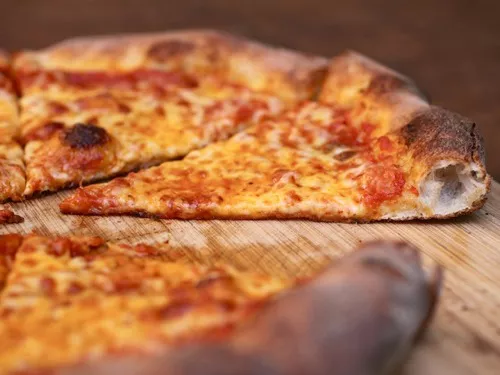

Daniel Kim 9A Computer class 11.8.21

Image Credit: J. Kenji Lopez Alt
- Very stretchy, thin, glutinous dough consisting of only flour, water, salt, sugar, oil, yeast
- Circular pies, with a thin crust. Cut into wide triangles before served, which are typically folded in the hand while being consumed.
- Thin layer of tomato sauce, which often has some oregano. Sauce taste varies depending on what shop or vendor you go to, but most will have a bright flavor, not a slow roasted sauce.
- A thin grating of parmesan cheese on top of the tomato sauce spread out. This supplements additional flavor to the full fat low moisture mozzarella that is sprinkled on top.